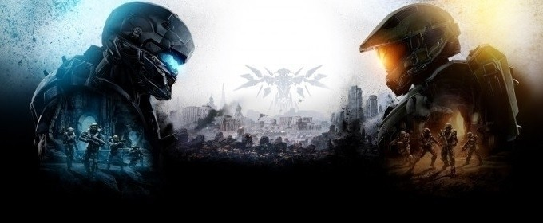

Топ 5 (2018)
- Far Cry 5 - Вас ждет как одиночное прохождение, так и кооперативный режим на двух человек, огромный мир с полной свободой, возможность летать на самолетах и принимать участие в воздушных боях, различное оружие и даже возможность заручиться поддержкой животных. Также в игре присутствует редактор карт.
- Frostpunk - В полностью замершем мире люди развивают паровые технологии, чтобы хоть как-то бороться с холодом. Сообщество в имеющемся виде не может более существовать и должно измениться, чтобы выжить. Но что значит это изменение? Что значит культура, когда мораль оказывается на пути у выживания? В конце концов, выживание может полностью изменить человечество. Будет от этого хуже или лучше, станут люди сильнее или слабее, или, возможно, будет утрачена часть того, что делает людей людьми?
- God of War – новый взгляд на популярную серию, где бессмертный полубог принимает решение измениться. Для Кратоса это значит нарушить цикл насилия, недоверия и предательства, которое было с незапамятных времен в его семействе. Именно этот цикл привел его к самым ужасным решениям – сделке с Аресом, убийству семьи, сумасшествию и мести, что в итоге стало причиной уничтожения Олимпа. Решение Кратоса также значит полный контроль над яростью – теперь он должен сам решать, когда выпустить монстра, живущего внутри себя, а когда придержать его.
- BATTLETECH – пошаговая тактическая игра, где пользователю дается контроль над отрядом пилотов боевых роботов. Именуемые мехами, эти многотонные машины несут массу вооружения и брони.Действия игры развиваются в знаменитой вселенной BattleTech, где никогда не утихает война за территории Внутренней Сферы. Временем действия выбран период Войны за Наследование, происходящей примерно в 3025 году.
- LEGO The Incredibles – игра в стиле знаменитого конструктора по мотивам одноименных мультфильмов студии Pixar. Отправляйтесь к удивительным приключениям с семьей Парр и помогите им справиться с злоумышленниками и семейными неурядицами по сюжетам «Суперсемейка» и «Суперсемейка 2» в увлекательном мире LEGO. LEGO The Incredibles — это захватывающие уровни и огромный мир, в котором нашлось место и Municiberg, и New Urbem. Применяйте свои «суперспособности», чтобы отдать суперзлодеев в руки правосудия. Играйте вместе с друзьями и близкими в режиме для двух игроков и собирайте потрясающие модели LEGO!